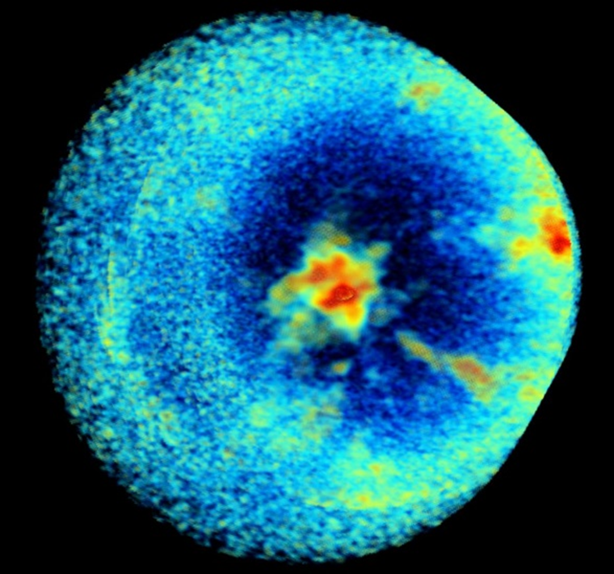

Enthusiastic Robotics Engineer currently pursuing an MSc in Robotics at the University of Manchester,
with a strong interest in the space industry. Excited to contribute my knowledge and skills to the field of space robotics and actively work towards solving the critical challenge of space debris removal. During my undergraduate studies in Robotics Engineering, I acquired a strong foundation in Robotics and Autonomous Systems, Computer Vision, Machine Learning, and Microcontroller Systems.
A notable highlight of my academic journey was the successful design and development of a proof of concept for an active space debris removal satellite for my final year project. This project showcased my ability to bring innovative ideas to life and presented the results at the 'UCLAN Engineering Expo,' where I had the opportunity to share my work with academic staff and external companies. The research project was driven by my desire to contribute to a sustainable and secure space environment, addressing the growing concerns surrounding space debris.
I am actively seeking opportunities to apply my skills in space robotics, whether it be in research and development, satellite mission design, or system integration. If you are looking for a dedicated and innovative Robotics Engineer with a passion for space, I would welcome the chance to connect and discuss potential collaborations or career opportunities..
Recent Work

Leo Rover Group Project MSc Robotics
Currently in active development as a collaborative group project,
our primary goal is to design an autonomous robot capable of independently
identifying and retrieving objects without any human intervention. The project will use ROS2,
equipped with a number of sensor peripherals including LiDAR, RGBD camera, IMU, and a thermal camera.

PLANETARY DEORBITER FOR
ACTIVE SPACE DEBRIS
REMOVAL – PETER-1
Undergraduate Final Year Project
The project proposed a novel concept for managing space debris by deploying into LEO several
station-keeping hubs containing 8 reusable modules that can capture and deorbit space debris of
different dimensions.
It resulted in an autonomous module made out light material and 3D printed
components that weighs under 5Kg, the maximum payload for an UR5 robot arm on which the
module can be mounted.

Flip-book Animation
The software has
been developed using Matlab and it allows the user to select a reference image to be used for the
image alignment, the type of feature extraction technique, the number of the strongest features, the
transformation type and some threshold parameters. The purpose of the software is to determine
the best combination of techniques to perform image alignment, for a given dataset. The quality
of the final result can be evaluated using the GIF produced by the software but also using image
quality metrics such as the Mean Matchmetric, Mean Squared Error (MSE), Structural Similarity
Index (SSIM) and the Peak Signal-to-Noise Ratio (PSNR).

Entrepreneurship and Start-up for Engineers
The first part of the project was a blend of workshops and expert-led masterclasses on presentation,
job interviews, and how to create a business as an entrepreneur. The second part was the employer challenge,
where Bentley was looking to reduce and reuse material waste. As a group of students led by a mentor, we delivered
different solutions that could be implemented into their existing process. One of the ideas was to create a whiskey
box to be used with their partner 'The Macallan'

Research at the Institute for Space Astrophysics and Planetology (IAPS)
I traveled to the Institute for Space Astrophysics and Planetology (IAPS) in Rome,
Italy for a 3-month research experience funded by the IET Travel Award 2022 and by the Erasmus+ Exchange Programme Grant.
My goal was to develop an algorithm for the analysis of high-resolution images
of specific star-forming regions in our Milky Way galaxy.
Education

University of Manchester
MSc Robotics
Sep 2023 - Present
• Course Representative MSc Robotics

University of Central Lancashire
Bachelor of Engineering with Honours in Robotics Engineering
Sep 2019 - Jul 2023
Grade: First Class (Overall APM : 81.10%)
• UCLAN Best Overall Performance Award for BEng Robotics Engineering
• Course Representative EERE (Electrical, Electronic and Robotics Engineering) 2021-2023
• Entrepreneurship and Start-up for Engineers Zone (EASE)
• Erasmus+ Exchange Programme 2022
Get In Touch on LinkedIn or Github